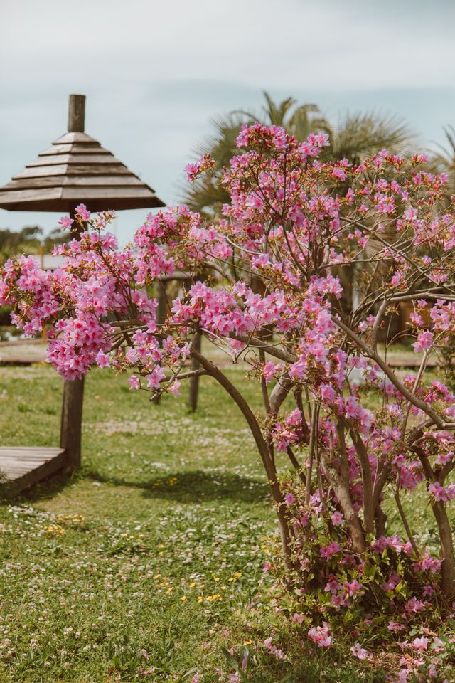
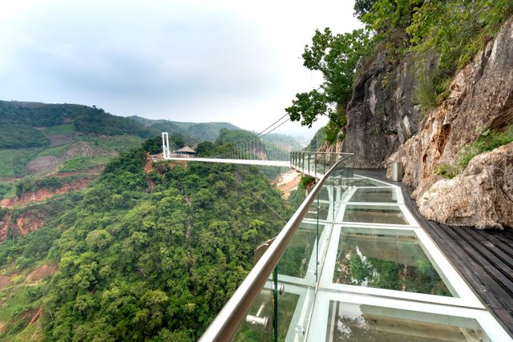
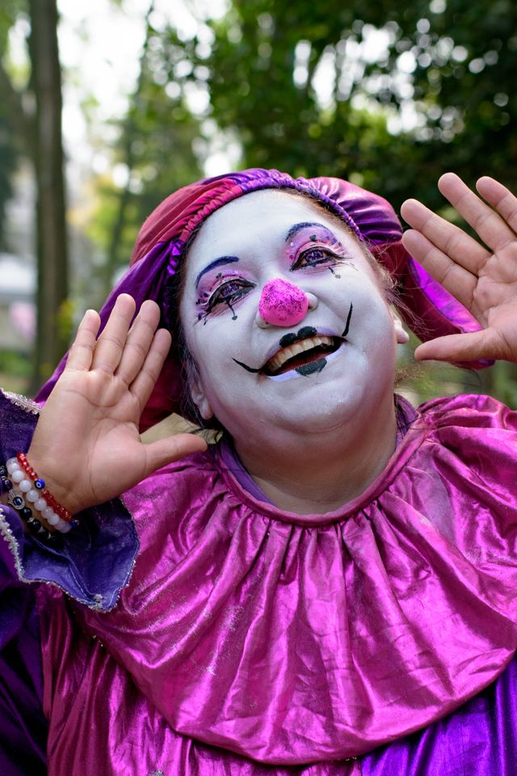
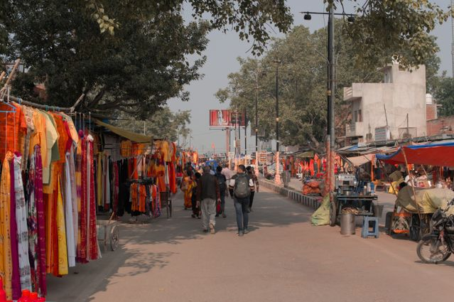

A Carnival Above the Clouds
Every summer, a traveling carnival appeared above the town of Bellweather. Its floating islands drifted through the sky, connected by rainbow bridges and guided by a golden lantern.
Seventeen-year-old mapmaker Milo had spent years drawing the carnival from his bedroom window. This year, he finally received a ticket. But when he arrived, the bridges were fading, the rides were slowing, and patches of the islands had turned gray.
Someone had stolen the four color crystals from the Rainbow Lantern. Unless Milo recovered them before sunrise, the carnival would disappear—with everyone still aboard.
Explore the Four Islands
Roseberry Gardens

Pink trees grow cotton-candy blossoms, and rivers of strawberry soda wind between enormous flowers. Milo must follow a trail of colorless petals to find the rose crystal hidden inside a sleeping flower.
Missing crystal: Rose
Tideglass Falls

Turquoise waterfalls spill over the edge of a floating island and dissolve into clouds. Beneath a bridge of glass, a water spirit guards the blue crystal and asks Milo to return something the carnival has forgotten: silence.
Missing crystal: Blue
Violet Moonfair

Purple roller coasters spiral around tiny moons, while glowing moths carry messages between the rides. The violet crystal is trapped on a Ferris wheel that only moves when someone tells the truth.
Missing crystal: Violet
Sunspell Market

Golden lanterns float above stalls selling bottled laughter, dancing scarves, and pocket-sized thunderstorms. Here, Milo discovers the yellow crystal being sold by a merchant who accepts memories instead of money.
Missing crystal: Yellow
Meet the Characters
Milo — The Mapmaker
Age: 17
Home: Bellweather
Curious and observant, but afraid of heights. His maps reveal paths that most visitors overlook. To save the carnival, he must finally explore the places he has only drawn.
"A map is only the beginning of an adventure."
Pip — The Lantern Fox
Role: Milo's guide
Special ability: A glowing tail
A small orange fox who knows every shortcut in the carnival. Pip is brave, playful, and easily distracted by sweets. His light grows weaker each time another color disappears.
"Follow my tail. And bring snacks."
Madame Marigold — The Carnival Keeper
Role: Founder of the carnival
Treasure: A coat covered in old tickets
The carnival's cheerful founder keeps a ticket from every year it has traveled. She knows why the crystals vanished but is frightened to admit her mistake.
"I only wanted the magic to last forever."
The Carnival's Secret
As Milo explores the islands, he notices that every crystal has found a quiet place away from the crowds. Was someone really trying to destroy the carnival?
The crystals were never stolen. Madame Marigold had kept the carnival running for a hundred years without letting its magic rest. The crystals scattered across the islands, searching for quiet places to recover.
Saving the carnival means allowing it to close until next summer.
Relight the Rainbow Lantern
With all four crystals recovered, Milo returns to the center of the carnival. There is just enough magic left to guide everyone home.
The Rainbow Lantern is waiting to shine.